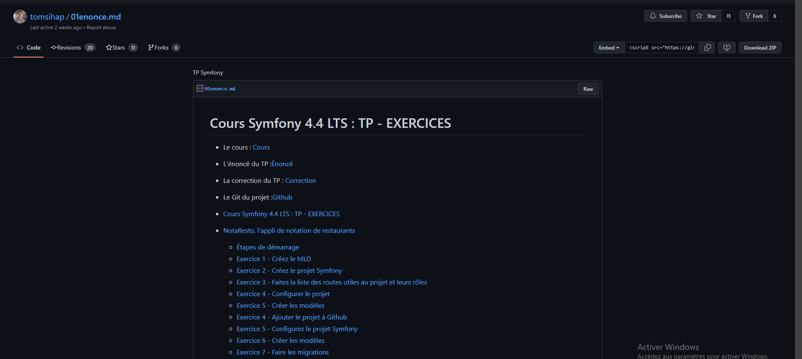

Informations sur le stage
- Catégorie: Stage conventionné
- Pour: BTS
- Date du stage: Janvier-Février 2022
- Compétence(s): Symfony + Twig + Ajax + JavaScript + GitKraken + BitBucket + ClickUp
Stage de 2 éme année de BTS SIO
La startup MasterCV m’a accueilli du 10 Janvier au 10 Février 2023 pour effectuer mon stage de 2° année de BTS SIO. Ce stage a été réalisé à Marseille, dans un environnement en Open Space et en présentiel durant toute la durée. A travers ce stage, différentes tâches m’ont été demandées (du développement web à l’intégration de ressources en passant par divers paramétrages).
Durant ce stage, j’ai eu des tâches différentes :
- Réaliser en local des exercices en symfony.
- Installer Laragon, GitKraken, ClickUP, Notion.
- Crée la features Blog
- Crée la features CV Vidéo
- Crée la features Unsplash
- Crée la features ListTemplate
- Crée la features ChangeModeleCv
- Crée la features PublishRecruteur
- Crée la features VerifiedAccount
Réaliser en local des exercices en symfony.
 DétailsLe cours est conçu pour les développeurs PHP qui souhaitent apprendre à créer des applications web performantes et évolutives en utilisant Symfony. Les exercices proposés dans le cours sont divisés en différentes sections et couvrent plusieurs aspects du développement avec Symfony, tels que la création de routes, la gestion des formulaires, l'utilisation de Doctrine pour l'accès à la base de données
Installer Laragon, GitKraken, ClickUP, Notion.

Laragon : est un environnement de développement web gratuit et facile à utiliser pour Windows. Il fournit un ensemble complet de logiciels pour exécuter des applications PHP, des bases de données MySQL, des serveurs web Apache et Nginx, ainsi que des outils de développement tels que Composer et Git, le tout en un seul clic.
Notion est un outil de productivité tout-en-un qui permet aux utilisateurs de créer, organiser et partager des notes, des bases de données, des tableaux de bord, des tâches et des projets en un seul endroit.
GitKraken est un logiciel de gestion de versions Git qui offre une interface utilisateur graphique (GUI) intuitive pour la visualisation, le suivi et le contrôle des modifications de code dans les projets de développement logiciel.
ClickUp est une plateforme de gestion de projet et de tâches en ligne qui offre des fonctionnalités de gestion de projet avancées pour les équipes et les organisations de toutes tailles.
Crée la features Blog le backoffice.

L'une des missions les plus enrichissantes de mon stage a été la création du backoffice de la section "Blog", comprenant une page de création d'articles ainsi qu'une page de création de catégories. La page de création d'articles permet de visualiser les articles déjà créés, leur catégorie et leur auteur, et de créer de nouveaux articles en spécifiant leur titre, une image, une description, un auteur et une catégorie. Quant à la page de création de catégories, elle permet de spécifier un nom de catégorie et de choisir sa couleur.
Crée la features CV Vidéo Frontend

Mon travail consistait à créer une page front-end en langage Twig pour être utilisée avec Symfony. La tâche consistait à réaliser une page permettant aux utilisateurs de réserver une équipe de tournage pour la production d'une vidéo professionnelle à intégrer dans leur MasterCV. J'ai également dû récupérer du CSS à partir d'autres pages existantes pour respecter la charte graphique.
Crée la features Unsplash

Cette tâche est en cours de production et d'implémentation, donc je ne peux vous présenter que le prototype. Les utilisateurs ont la possibilité de changer l'image de fond de leur MasterCV pour le personnaliser. En plus de proposer un service de téléversement de photos, nous offrons également la possibilité de rechercher des photos sur Unsplash pour proposer une banque d'images aux utilisateurs afin qu'ils puissent changer le fond de leur MasterCV.